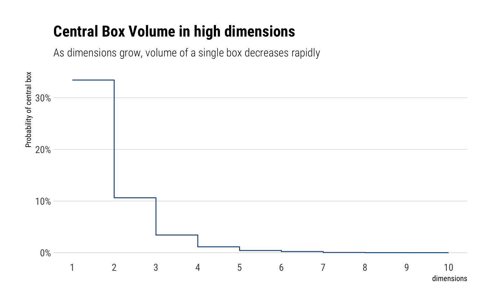
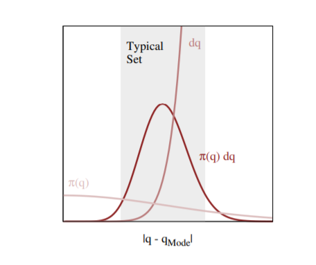
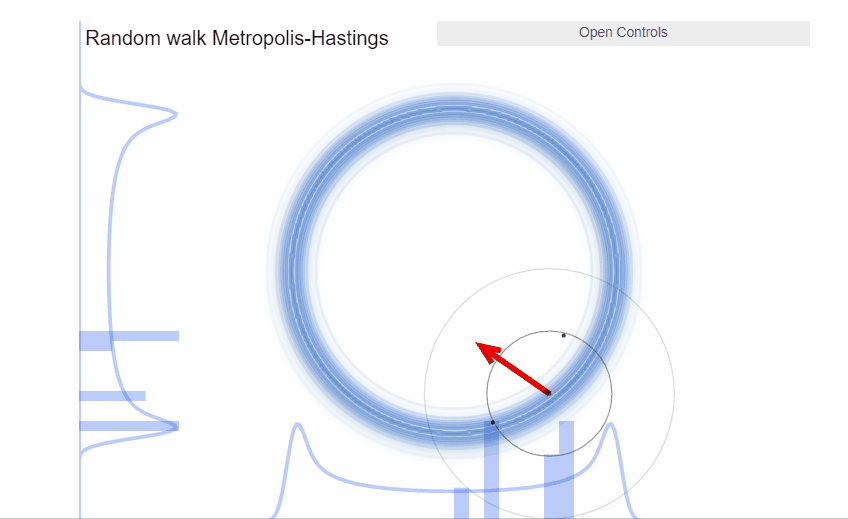

BDA Week 6: MCMC in High Dimensions, Hamiltonian Monte Carlo
Published
July 2, 2020
In the last couple of weeks, We’ve seen how the most difficult part of Bayesian Statistics is computing the posterior distribution. In particular, in the last week, we’ve studied the Metropolis Algorithm. In this blogpost, I’ll study why Metropolis does not scale well enough to high dimensions and give an intuitive explanation of our best alternative: Hamiltonian Monte Carlo (HMC).
This blogpost is my personal digestion of the excellent content that Michael Betancourt has put out there to explain HMC. I particularly enjoyed his YouTube lecture and his blogpost about Probabilistic computation.
Metropolis Algorithm
As we’ve seen, the Metropolis algorithm is just a random walk through parameter space where the proposed jumps are corrected by a comparison of posterior densities to determine whether to move or not. That is, we can see the Metropolis algorithm as:
A stochastic version of a stepwise mode-finding algorithm, always accepting steps that increase the density until it finds the mode and then only sometimes accepting steps that decrease the posterior density.
Thus, as long as the algorithm has run long enough to find the posterior mode, and the area around the mode is a good representation of the overall posterior, the Metropolis Algorithm will work. Sadly, this assumption only holds for lower dimensions
An Expectation in low dimensions
Fundamentally, we sample from the posterior in order to compute Monte-Carlo estimators. That is, we want to approximate expectations:
With the Metropolis algorithm, we are saying that we can approximate these expectation by computing at values near the mode of \(\pi(q)\) and occasionally exploring lower density parts. Which is a pretty good approximation of most unimodal low dimensional probability distributions. However, this entirely ignores the contribution of \(\mathrm{d} q\), the differential volume, to the integral.
An Expectation in high dimensions
However, as the number of dimensions grows, so does the importance of \(\mathrm{d} q\), the differential volume, to the integral. Therefore, in higher dimensions, ignoring the differential volume when computing the expectation guarantees biased samples. Why does this happen? This is due to a phenomenon called concentration of measure.
Intuitively, an integral is nothing more than a weighted sum of parts of the distribution with height equal to function heights. However, as dimensions grows, the contribution of any single part of the distribution to the integral decreases very rapidly. Why? Because, the relative differential volume of this single part of the distribution decreases as we increase the number of dimensions. Michael’s Betancourt box-experiment is very illuminating.
Corner Madness
Let’s begin with a simple example - a square box representing the ambient space. In each dimension we will partition the box into three smaller boxes, with the central box corresponding to the neighborhood around the mode and the outer two side boxes corresponding to the rest of the space.
In one dimension, the central box encapsulates one third of the total volume. In two dimensions, there are nine boxes, thus the central box represents only 1/9 of the volume. In three dimensions, we must fill the corners of the corners with more boxes, thus creating 27 boxes. The central box now only represents 1/27 of the total volume. We can keep increasing dimensions with the aid of Monte-Carlo samples.
The relative importance of the central box is its probability with respect to a uniform distribution over the enclosing box, which we can estimate by sampling from that uniform distribution and computing the Monte Carlo estimator of the expectation value of the corresponding inclusion function
N <-10000Ds <-1:10prob_means <-0* Dsfor (D in Ds) { is_central_samples <-rep(1, N)for (n in1:N) {# Sample a new point one dimension at a timefor (d in1:D) { q_d <-runif(1, -3, 3)# If the sampled component is not contained # within the central interval then set the # inclusion function to zeroif (-1> q_d || q_d >1) is_central_samples[n] <-0 } }# Estimate the relative volume as a probability prob_means[D] <-mean(is_central_samples)}data.frame(dimensions = Ds, prob_central_box = prob_means) %>%ggplot(aes(dimensions, prob_central_box)) +geom_step(color ="dodgerblue4") +scale_y_continuous(labels = scales::percent) +scale_x_continuous(breaks =1:10) +labs(y ="Probability of central box",subtitle ="As dimensions grow, volume of a single box decreases rapidly",title ="Central Box Volume in high dimensions")

All that matters: the typical set
Thus, the volume of a single neighborhood of the distribution decreases very rapidly as the number of dimensions grow. In our expectation, thus, the mode of the density \(\pi(q)\) represents a neighborhood of the distribution with less and less volume and thus less and less probability mass. Indeed, in higher dimensions, our earlier intuition of a a probability distribution as concentrating around the mode and quickly decreasing is terribly wrong.
Indeed, the probability of mass of any neighborhood of the distribution really depends on the interplay between its volume and the density. Without both of them, the probability mass at that neighborhood the distribution vanishes. Indeed, Michael Betancourt’s has a great plot showing where the volume and the target density interact to create large probability mass:

The neighborhood immediately around the mode features large densities, but in more than a few dimensions the small volume of that neighborhood prevents it from having much contribution to any expectation. On the other hand, the complimentary neighborhood far away from the mode features a much larger volume, but the vanishing densities lead to similarly negligible contributions expectations. The only significant contributions come from the neighborhood between these two extremes known as the typical set
Therefore, to calculate an expectation it suffices to sample from the typical set instead of the entire parameter space. The question, then, is what is exactly the shape of this typical set?
A surface concentrating away from the mode
As the number of dimensions grows and grows, the increasing tension between probability density and volume yields a worse compromise, and those compromises are found at points further and further from the mode. This is known as concentration of measure. Thus:
The repulsion of the typical set away from the mode implies that the relative breadth of the typical set, how far its fuzziness diffuses, shrinks with increasing dimension. As we consider higher-dimensional spaces the typical set becomes ever more thin and gossamer, and all the harder to find and explore.
Thus, the typical set, as the number of dimensions grow, becomes a narrow ridge of probability that becomes very difficult to explore with guess and check algorithms like the Metropolis algorithm.
Metropolis and the typical set
The Metropolis Algorithm is not equipped to sample from the typical set. As we’ve seen, it’s a mode finding algorithm that explores the neighborhood around it. However, this neighborhood, as we’ve just seen, has barely any volume in high dimensions and thus have barely any probability mass. Indeed, given the narrowness of the typical set, almost all proposed jumps of the random walk will be outside the typical set and thus will be rejected.
Therefore, the Metropolis Algorithm in high dimensions results in inaction: the Metropolis algorithm will end up without moving at all for a long time. Thus, being a waste of our computational resources.
In two dimensions, we can visualize a typical set as a thin donut: at any point within it, there’s only a narrow ridge of points next to it that also belong to the typical set. Any ad-hoc proposal distribution that guesses in which direction we should move will be biased to propose points outside the typical set that will be rejected once we compare the Metropolis acceptance probability.
<<<<<<< HEAD  ======= >>>>>>> abe09e3cd313dfc12630c3063c969959af729a6a
Hamiltonian Monte-Carlo
So far, we’ve identified the fundamental problem with the random walk in the Metropolis algorithm: in higher dimensions, its adhoc proposal distribution guesses too many dumb jumps that take us out of the narrow ridge of high probability mass that is the typical set. How to fix this? Create a proposal distribution that takes into account the geometry of the typical set and makes intelligent proposal?
An intelligent proposal should make proposals within the typical set AND make proposals that are far away from where we currently are. Thus, we will explore the typical set as efficiently as possible. Hamiltonian Monte-Carlo algorithms, when well tuned, satisfy both conditions.
Crafting a proposal distribution for the typical set
We’ve identified that an intelligent proposal distribution will encode the geometry of the typical set. A natural way of encoding this geometry is with a vector fieldaligned with the typical set. Thus, instead of taking a random-walk through parameter space, we will simply follow the vector field for some time. Therefore:
Continuing this process traces out a coherent trajectory through the typical set that efficiently moves us far away from the initial point to new, unexplored regions of the typical set as quickly as possible.
<<<<<<< HEAD The question, then, is how to create these vector field? A first approximation is to exploit the differential structure of the posterior through the gradient. However, following the gradient pulls us away from the typical set and into the mode of the posterior. Here comes Physics to the rescue. This is an equivalent problem to the problem of placing a satellite in a stable orbit around a hypothetical planet. ======= The question, then, is how to create these vector field? A first approximation is to exploit the differential structure of the posterior thoruhg the gradient. However, following the gradient pulls us away from the typical set and into the mode of the posterior. Here comes Physics to the rescue. This is an equivalent problem to the problem of placing a satellite in a stable orbit around a hypothetical planet. >>>>>>> abe09e3cd313dfc12630c3063c969959af729a6a
The key to do it is to endow our walk through the typical set by with enough momentum (\(p\)) to counteract the gravitation attraction of the mode. Therefore:
We can twist the gradient vector field into a vector field aligned with the typical set if we expand our original probabilistic system with the introduction of auxiliary momentum parameters.
Augmenting with the momenta
We augment our probabilistic system with the momenta \(p\) thus:
\[
\pi(q, p)=\pi(p \mid q) \pi(q)
\]
<<<<<<< HEAD Which allows us to ignore the momenta when necessary by marginalizing it. The joint density \(\pi(q, p)\) defines a Hamiltonian
\[
H(p, q) = - log \pi(p,\theta)
\]
Thus, given some point in the phase space \((q_0, p_0)\) that is in the typical set, the Hamiltonian defines how to generate a new sample such that we stay in the typical set.
Therefore:
Which allows us to ignore the momenta when necessary by marginalizing it. The joint density \(\pi(q, p)\) is constructed following Hamiltonian dynamics. Therefore: >>>>>>> abe09e3cd313dfc12630c3063c969959af729a6a
Following the Hamiltonian vector field for some time, ( t ), generates trajectories, ( _{t}(q, p), ) that rapidly move through phase \((q_n, p_n)\) space while being constrained to the typical set. Projecting these trajectories back down onto the target parameter space finally yields the efficient exploration of the target typical set for which we are searching.
3 stages to generate a proposal distribution
Suppose you are at \(q_0\). How to generate a new proposal?
We start by sampling a momentum from \(p_0\) from:
\[
p_0 \sim \pi(p | q)
\]
We know are in the phase space \((q_0, p_0)\).
<<<<<<< HEAD 2. If we follow the vector field by following Hamilton’s equations that we have created ( {t}(q_0, p_0) = q^, p^, ) by integrating for some time \(t\), we coherently push the Markov transition away from the initial point while staying confined to the joint typical set. This movement through the field space is done via discrete \(L\)‘leapfrog steps’ with discretization time \(\epsilon\). Stan’s implementation of HMC automatically chooses both of these values. ======= 2. If we follow the vector field that we have created ( {t}(q_0, p_0) = q^, p^, ) by integrating for some time \(t\), we coherently push the Markov transition away from the initial point while staying confined to the joint typical set. This movement through the field space is done via discrete \(L\)‘leapfrog steps’. Stan’s implementation of HMC automatically chooses the leapfrog steps and their respective length. >>>>>>> abe09e3cd313dfc12630c3063c969959af729a6a
If we marginalize the momenta, we project it away and go back to the parameter space with a proposal \(q^*\).
Because we have followed the vector field in phase space and projected the momenta away, if we started in the typical set, our proposal is guaranteed to be on the typical set, too. Thus, allowing extremely efficient exploration of the typical set.
<<<<<<< HEAD Finally, we will accept or reject our proposed jump with a Metropolis ratio.
\[
r = \min \left(1, \exp \left(H(p_0, \theta_0)-H\left(p^{*}, \theta^{*}\right)\right)\right)
\]
Thus, with probability \(r\), we set \(\theta_1 = \theta^*\). Otherwise, \(\theta_1 = \theta_0\).
We can visualize the incredible efficiency that Hamiltonian Monte Carlo can deliver. In the exact same example as with the donut we just saw with Metropolis, HMC samples much more efficiently.
Finally, we will accept or reject our proposed jump with a Metropolis-Hastings ratio.
We can visualize the incredible efficiency that Hamiltonian Monte Carlo can deliver. In the exact same example as with the donut we just saw with Metropolis, HMC samples much more efficiently.
abe09e3cd313dfc12630c3063c969959af729a6a
Conclusion
High dimensional probability distributions are difficult to understand. Instead of piling much of the probability mass around the mode, the probability mass lies at the intersection of the neighborhoods where there is volume and there is target density. This area of probability mass is a narrow surface that lies far from the mode and is called the typical set. Random walk algorithms, like Metropolis, are fundamentally ill-suited to explore such narrow surfaces: their ad-hoc proposal distributions are biased to propose jumps that lie outside the typical set and thus the jumps are rejected. The end result, the chains explore the typical set very inefficiently.
On the other hand, Hamiltonian Monte Carlo (HMC) algorithms are precisely constructed to exploit the geometry of the typical set and make intelligent proposals. By borrowing Hamiltonian dynamics from physics, we create proposals that follow a vector-field that is aligned with the typical set. Thus, our proposals will lie on the typical set and will be much more likely to be accepted than the proposals of a random walk like those of Metropolis. Therefore, HMC allows us to efficiently explore the typical set.
 >>>>>>> abe09e3cd313dfc12630c3063c969959af729a6a
>>>>>>> abe09e3cd313dfc12630c3063c969959af729a6a